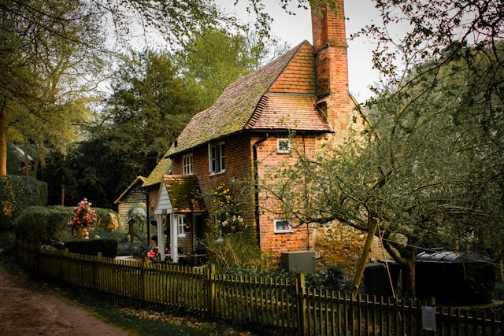

After having fought an intense battle without losing any sense of himself. Armani returns to his family, greeted by his wife and son. Peace fills his heart, but he senses a looming danger. Should he train his son to fight, or focus on building a life of peace?
